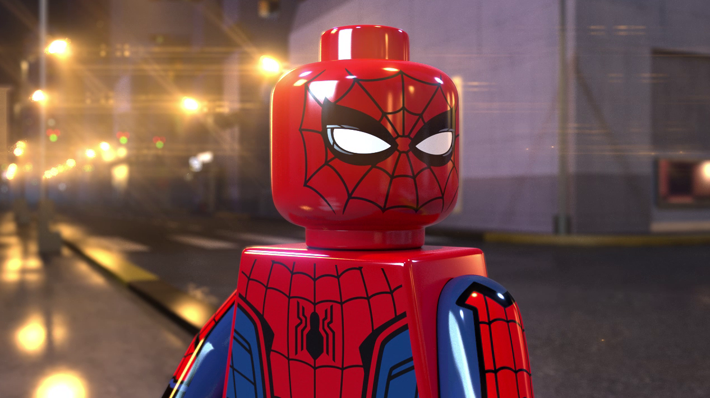
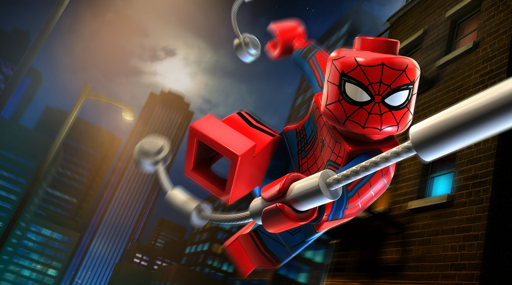

Spider-Man
Челове́к-пау́к , настоящее имя Пи́тер Па́ркер — персонаж, супергерой, появляющийся в комиксах издательства Marvel Comics, созданный Стэном Ли и Стивом Дитко. С момента своего первого появления на страницах комикса Amazing Fantasy №15 (рус. Удивительная фантазия, август 1962) он стал одним из самых популярных супергероев. Ли и Дитко задумывали персонажа как подростка-сироту, воспитанного дядей и тётей, совмещающего жизнь обычного студента и борца с преступностью. Человек-паук получил суперсилу, увеличенную ловкость, «паучье чутьё», а также способность держаться на отвесных поверхностях и выпускать паутину из рук с использованием прибора собственного изобретения

До появления Человека-паука в 1960-х подростки в комиксах о супергероях обычно были всего лишь их помощниками. Комиксы о Человеке-пауке разбили эти стереотипы, представив героем одинокого подростка, отвергаемого многими сверстниками[4] и у которого не было опытного наставника, как Капитан Америка у Баки или Бэтмен у Робина. После смерти своего дяди Бена ему пришлось самостоятельно узнавать, что «с большой силой приходит и большая ответственность
Marvel выпустила множество серий комиксов о Человеке-пауке, самой первой из которых стала The Amazing Spider-Man , последний выпуск которой вышел в декабре 2012 года. На смену ей пришла серия комиксов The Superior Spider-Man . Серия закончилась на 31 номере, и на её место пришёл третий том The Amazing Spider-Man. Комикс был вновь перезапущен после события Secret Wars . За годы своего существования Питер Паркер был то робким учеником средней школы, то проблемным студентом колледжа, то женатым учителем, то главой мультимиллиардной компании, а также членом нескольких команд супергероев, таких как Мстители, Новые Мстители, Фантастическая четвёрка. Наиболее характерным образом Питера Паркера вне жизни Человека-паука является образ независимого фотографа, который использовался в комиксах на протяжении многих лет.
Человек-паук является одним из самых популярных и коммерчески успешных супергероев. С увеличением своей популярности Человек-паук вышел за пределы комиксов, стал появляться на телевидении, в видеоиграх и кинофильмах. В разное время его играли актёры Тоби Магуайр (трилогия Сэма Рэйми), Эндрю Гарфилд (дилогия Марка Уэбба), Том Холланд («Первый мститель: Противостояние» и последующие фильмы в рамках кинематографической вселенной Marvel)[5]. Рив Карни предстал в роли Питера Паркера в бродвейском мюзикле 2010 года «Человек-паук: Погасить темноту»
About май

Твой любименький
МАЙНКРАФТ ЭТО МОЯ ЖИЗНЬ!